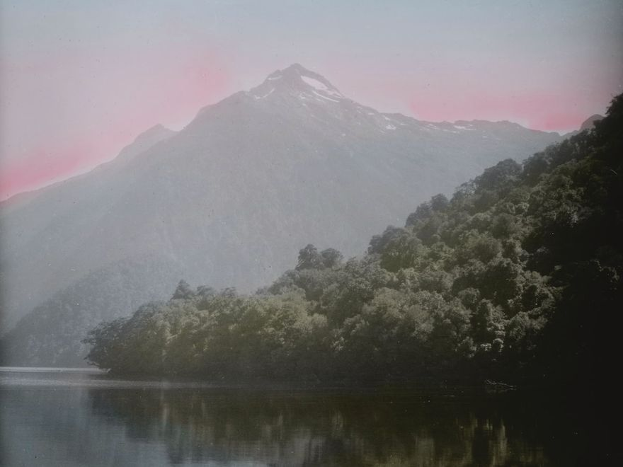
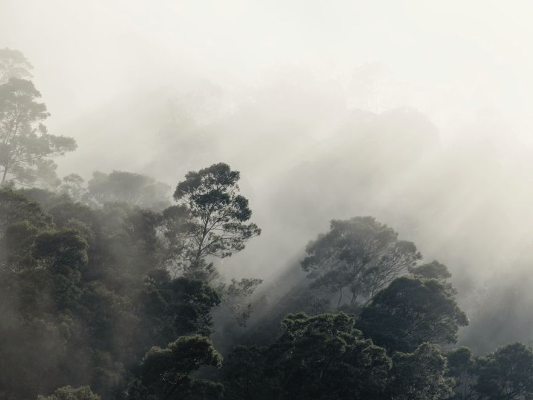
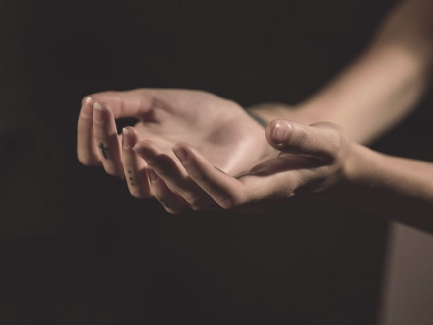
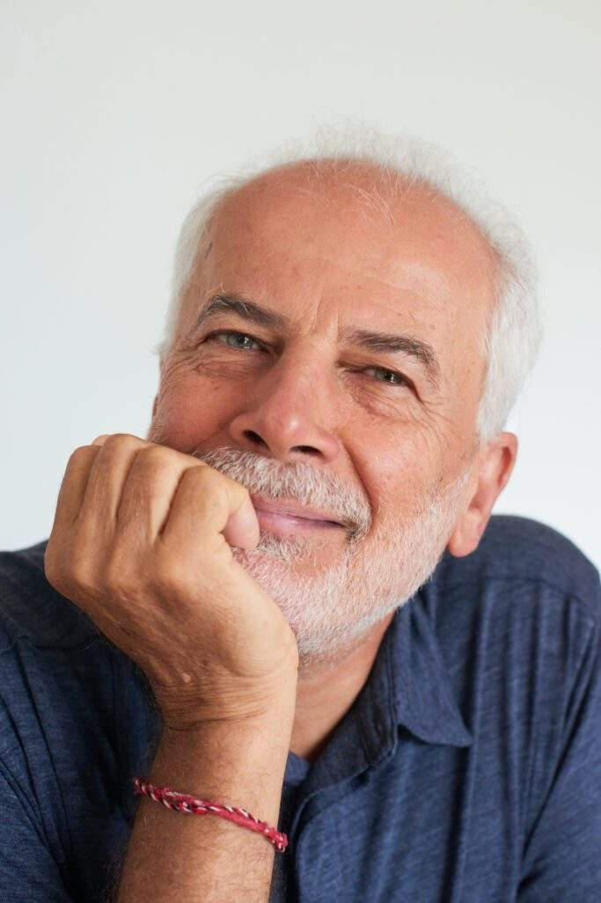
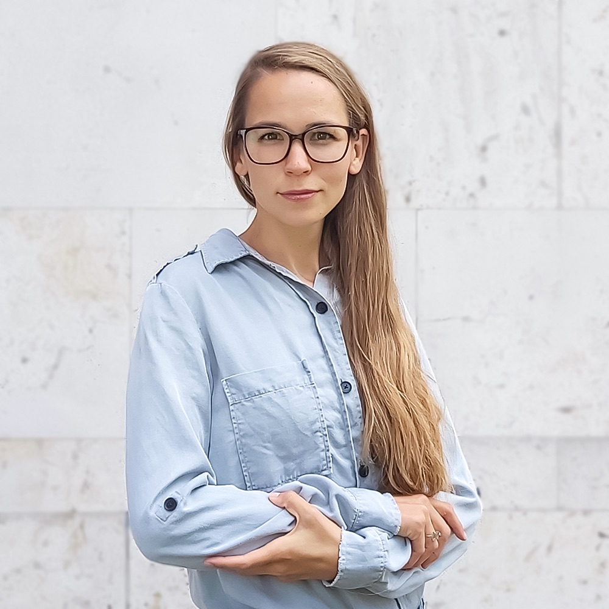

Bő egy éves, zárt önismereti folyamat — légzéssel, testmunkával, pszichodrámával és családállítással.
Az ígéret
Vannak dolgok, amiket nem lehet megbeszélni — mert a szavak nem érnek el oda, ahol ezek élnek. A félelem a mellkasban. A gyász, ami sosem jött ki. A kapcsolati minta, amit generációkon át hordozunk anélkül, hogy tudnánk, honnan jött. A szeretet, ami összeköt. A HELD Experience azért jött létre, hogy ezekhez a helyekhez el lehessen jutni.
A módszer
Évek alatt sok önismereti módszertant sajátítottunk el — és ezek ötvözésével, egymásra építésével alakítottuk ki ezt a megközelítést. Négy réteg, amely külön-külön is hat, együtt viszont megsokszorozza, amit önmagában tenne.
A módszer
Mi történik az idegrendszeremben?
A légzés egyedülálló: egyszerre akaratlagos és autonóm. Amikor tudatosan dolgozunk vele, olyan utak nyílnak meg, amelyekhez egyébként nehezen férünk hozzá. Egy időre elérhetjük, hogy a paraszimpatikus rendszer domináljon, a tudatos kontroll csökkenjen — és a test végre úgy szólalhasson meg, hogy meg is halljuk.
Mit hordoz a testem?
A traumáink nem elsősorban emlékként tárolódnak. Testérzésként élnek bennünk — feszültségben, zsibbadásban, visszatérő mintákban. A szomatikus munka azért fontos, hogy az ezek mögött meghúzódó traumák feloldódjanak, és utat találjanak a felszínre.
Mi nem történhetett meg köztem és a másik között?
A pszichodrámában nem csak megértjük, ami volt — elvégezzük azt, ami nem történhetett meg. A csoport terében a múlt nem rögzített: ami félbemaradt, befejezhető; ami megtörtént, átírható. A dramatikus cselekvés más, mint az intellektuális belátás — a szervezet is megérzi, hogy valami lezárult, valami feloldódott.
Mit hordozok azoktól, akik előttem jöttek?
Mintáink nem a fogantatásunktól kezdődnek. A testünk generációs terheket, lojalitásokat, megoldatlan dinamikákat is hordoz. Ahol a többi modalitás eléri a határát, ott lép be a családállítás — amikor a rendszer dinamikája láthatóvá, és feloldhatóvá válik.
Kinek szól
01
Segítő munkát végzel — terapeutaként, coachként, facilitátorként — és tudod, hogy a saját gyógyulásod nem ért véget egy képzéssel.
02
Érzed, hogy az „érteni" nem elég. Valami mélyebb mozdulatlanságot hordozol, amit az intellektuális feldolgozás nem old fel.
03
Kíváncsi vagy, milyen egy tér, ahol a légzés, a test, a kapcsolat és a generációs minta egyszerre kaphat figyelmet.
A trauma nem kizáró ok. A program ennek feltárását is tartalmazza, és felkészülten kezeli.
Visszajelzések

„Olyan, mintha lenne rajtam egy kapcsoló, amivel pillanatok alatt át tudok váltani nyugodt üzemmódba. Megváltoztatta az életemet.”
Résztvevő

„Oda tud jutni, ahova a beszélgetős terápia nem nagyon. Hiába tudod, mi a traumád, ha közben nem éled meg — itt olyan dolgok is felszínre jönnek, amikről nem is tudtam.”
Résztvevő

„Számomra mindig kritikus, kik azok a vezetők, akik mellett teljesen biztonságban érezhetem magam, amikor ismeretlen terepre lépek. Nagyon örültem, hogy ti indítottatok egy ilyen csoportot.”
Résztvevő
„Testi feszültségek oldódtak fel bennem: az állkapcsom és a csípőm feszülése eltűnt, és azóta sem jött vissza. És felismertem, milyen bátor, erős és érzékeny vagyok.”
Résztvevő
„Ha elengedem az irányítást és hagyom, hogy vigyen a folyamat, sokkal többet kaphatok, mint amit valaha el tudtam volna képzelni.”
Résztvevő
Az alapítók
Péter és Viki évek óta vezetnek együtt pszichodráma-csoportokat, és mindketten több breathwork-iskolában képződtek (Alchemy of Breath, BBTRS). A HELD Experience abból a felismerésből nőtt ki, ami a közös munkában vált nyilvánvalóvá: ez a négy modalitás, egymással integrálva, megsokszorozza azt, amit külön-külön tennének.

MCC coach · Kiképző pszichodráma-vezető · AoB breathwork facilitátor
Péter azt mondja, akkor a leghasznosabb, ha igazán nagy a baj. Nem kicsit nagy. Igazán nagy. Ez vagy szokatlan személyes márka, vagy pontos önismeret — negyven év után a kettő nagyjából ugyanúgy néz ki.
Közgazdászként kezdett. Aztán vezető, tréner. Az a fordulat, ami mindent átrendezett, személyes volt — nyíltan beszél róla: a válása. Azóta foglalkoztatja egy kérdés: mi segít abban, hogy valaki önmaga lehessen? A keresés elvitte Marshall Rosenberghez és az Erőszakmentes Kommunikációhoz, pszichodráma-képzésre, az Alchemy of Breath facilitátori programjába. Ma MCC-minősítésű coach, kiképző pszichodráma-vezető, krízisterapeuta. Csoportokban dolgozik, légzéssel — és azzal az egészen konkrét drámával, ami egy szobában akkor zajlik, amikor az emberek abbahagyják a teljesítmény hajszolását, leveszik a külvilágnak felvett álarcot, és megmutatják magukat.

Pszichológus, PCC · Pszichodráma-vezető · BBTRS breathwork facilitátor
Pszichológusként végeztem, és több mint tíz éve kísérek embereket egyéni és csoportos folyamatokban. Emellett ugyanennyi ideje dolgozom szervezetfejlesztési területen coachként, coachképzőként és trénerként. Két kislány édesanyjaként a mindennapokban is megtapasztalom, mennyire fontos a kapcsolódás, a rugalmasság és a folyamatos fejlődés.
Pszichodráma-vezetőként hiszek a csoport megtartó erejében, az „itt és most” erejében, valamint a test bölcsességében. Számomra a jelenlét azt jelenti, hogy figyelünk a testünk jelzéseire, és teret adunk annak, ami éppen megszületni szeretne bennünk.
Az évek során számos testfókuszú módszert tanultam. Breathwork facilitátorként (BBTRS) a légzéssel való munka új perspektívát nyitott számomra a trauma és a gyógyulás megértésében. Azóta a légzés a csoportjaimnak és az egyéni munkámnak is fontos része.
Csoportjaimban integratív szemlélettel dolgozom: a pszichodráma mellett testorientált technikákat, művészet- és zeneterápiás elemeket, valamint coaching eszközöket is használok. Szeretem, amikor a felismerések nemcsak fejben születnek meg, hanem a testben és a kapcsolatokban is átélhetővé válnak, mert ezekből lesz valódi változás.
Az applikáció
A két alkalom közötti gyakorláshoz a HELD Experience alkalmazás iOS és Android rendszeren is elérhető lesz. Iratkozz fel, és elsőként értesítünk.
Hamarosan
App Store
Hamarosan
Google Play
A program zenéje
Ezek a dalok szóltak a közös munka alatt. Ha elindult benned egy folyamat, ha megérintett egy pillanat — a zene vissza tudja hozni, és segít újra ráhangolódni arra az állapotra. Itt, a dalok között megtalálod a zenédet.
Program & jelentkezés
Időpontok
okt. 10–11. · nov. 14. · dec. 12.
jan. 23. · febr. 13. · márc. 20. · ápr. 17. · máj. 22. · jún. 19. · szept. 18. · okt. 16. · nov. 13. · dec. 11–12.
Helyszín
Magnet Közösségi Ház
Budapest
Részvételi díj
45.000 Ft / nap
A teljes folyamat 15 nap
A regisztrációs adatlap új lapon nyílik meg. A férőhelyek száma korlátozott.
Az adatkezelésről az Adatkezelési tájékoztatóban olvashatsz.